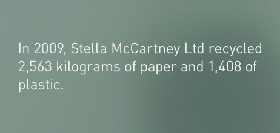
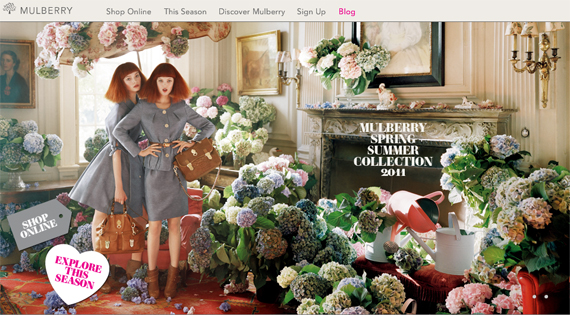
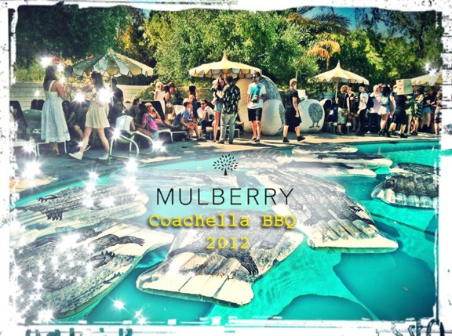
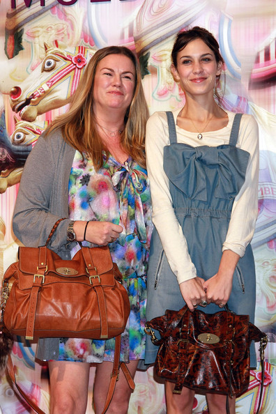

FASHION PR: BUCKLE IT UP...PART 2
Ok so, I have finally posted part 2, much later than expected but...sometimes life happens.
Following on from Fashion PR: Buckle it Up Part 1, where I touched on the fundamentals of PR, in this part I will endeavor to delve into the intricacies that encapsulates PR from a Fashion Industry perspective...Public Relations is not simply about creating a positive image, minimising bad publicity or creating a favourable climate of opinion. It is about creating understanding through knowledge, which more often than not involves effecting change. One of the main aspects of PR is its responsibility to the publics’ interest.
An organisation is judged on its behaviour, and good PR is all about goodwill and reputation. This can be seen with Stella McCartney’s eponymous label, whose community work with environmental and animal rights causes, in which she is a staunch supporter both personally and professionally, communicates a climate of social responsibility. Company initiatives are strategically aligned with the brand, which not only uses natural and non-animal material in all its designs, it operates to minimise its carbon footprint in all its manufacturing and affiliated companies.
Heading
Contemporary Public Relations is seen as dynamic and flexible, where practitioners must be responsive to environmental changes and consumer trends that influence the organisation as a whole. Fashion PR is all about relationship building, offering an open two-way conversation between customers and forming strategic partnerships with other companies that are aligned with the brand to communicate its key messages. One of the vital roles in Fashion PR is cultivating positive press and strong editorial coverage for a label, whether it be in-house or through consultancy, as it has the power to skyrocket a designer into the spotlight and drive demand at store level (Gehlhar, 2008). This pull strategy can be implemented when launching a new label or effecting change of an existing brand.
Case in point...the luxury British fashion house Mulberry.
Almost four years have past since the company was in the midst of re-defining its brand, taking it from a ‘Mummsy’ leather goods house to a coveted ‘IT’ status brand among the style set. How was this achieved so seamlessly you may (...or may not) ask? Three words: Public. Relations. The appointment of then new, now former, Creative Director Emma Hill, who during her rein steered the label towards a fresher horizon, didn’t hurt either.
The company’s focus on strategically aligning its overall brand objectives with key PR initiatives was a major contributing factor in the successful re-branding of the Mulberry label. A key objective was to shift existing consumer beliefs about the brand and increase awareness of the label amongst targeted publics. Mulberry deployed a strong communications strategy with the key message of celebrating the country-side established tradition of the brand whilst realigning it with urban contemporary styles. This was achieved through forming tactical partnerships, celebrity endorsements and key product placements and event sponsorship.
Mulberry’s PR team saw an opportunity to leverage off the celebrity clout of Alexa Chung, a fan of the label for many years and deemed as a British style icon in the minds eye of the labels key demographic. Mulberry’s first assault on the fashion circuit was with the ‘Alexa’ bag, inspired by Chung. Then, you guessed it, the A-listers soon followed suit, toting around various incarnations of the original, resulting in strong editorial coverage in every major fashion weekly, tabloid, and newspaper internationally. Hailed as the next big thing in accessories at a time, where the resurgence of the ‘IT’ bag was beginning to gain momentum, it can be said that the PR plan surrounding the ‘Alexa’ bag single handedly took the company to a whole other level.
Former Mulberry Creative Director Emma Hill (Left) with Alexa Chung.
So, it can be said that fashion PR is much more about building strong relationships that benefit the company in a strategic and fiscal way…more so than meets the eye.